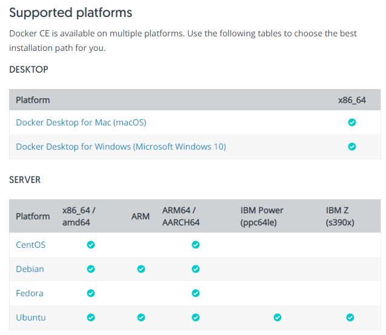
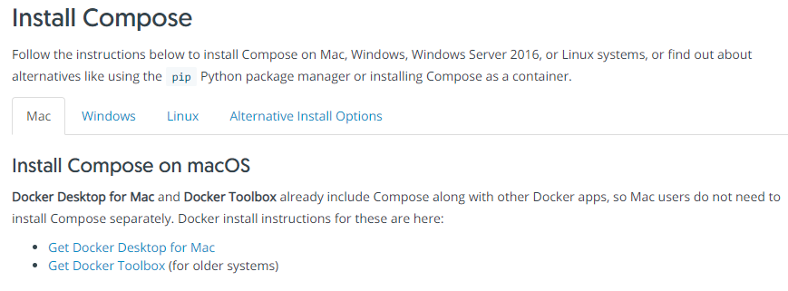
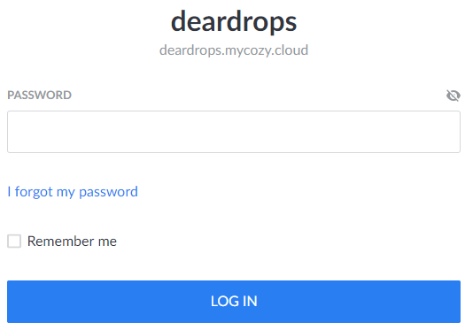

这篇文章指导从零开始搭建一个 cozy 网盘的过程，由于官方文档还不是很完善，只给出了 Debian 和 Raspbian 系统下的安装指南。我们这里抛开指南中的繁琐步骤，使用 docker 简单几步安装，支持所有操作系统环境。
要求
- 域名一枚
- VPS 一台（带有公网 IP 地址）
所使用的技术栈
- Docker 和 Docker-compose
- Traefik
- CounchDB
安装步骤
1. 修改 DNS 解析
第一步是设定一个 二级域名 给 cozy 服务使用，我们这里设定为 cozy，进入你的 DNS 解析服务提供商（国内推荐 DNSPod，国外推荐 Cloudflare）的网站，修改 DNS 解析记录如下：
假设域名为 example.com，IP 地址为 x.x.x.x
| 类型 | 域名 | 记录值 | 说明 |
|---|---|---|---|
| A | cozy.example.com | x.x.x.x | 将这个二级域名解析到服务器的 IP 上 |
| CNAME | *.cozy.example.com | cozy.example.com | 将该二级域名的所有子域名解析到自身上 |
TTL（Time-To-Live，域名解析记录存留时间）使用默认的就好。
距离 DNS 解析生效还有一段时间，我们进行下一步。
2. 安装 Docker 和 Docker-compose
在 Docker 列出的 受支持平台 中找到你的系统，点击对应的安装教程，按照步骤安装。

Docker 安装完成后，接下来是安装 Docker-compose，同样按照官方的 安装指南，选择对应的系统平台安装。

3. 安装 Cozy
github 上有一个 非官方 的 Cozy 的 Docker 项目，叫做 easy-cozy，作者在 readme 中也给出了安装步骤，本文就是在这个基础上稍加修改写成的。
3.1 下载这个仓库到本地
git clone https://github.com/vsellier/easy-cozy
cd easy-cozy3.2 修改配置文件
cp env-template .env将修改文件中 COZY_TLD 和 EMAIL 两项 ，其他可以使用默认配置。COZY_TLD 是你的服务器二级域名，即第一步中设定的域名。EMAIL 用于向 let’s encrypt 申请 https 证书时使用，作用是 90 天后证书到期时发邮件提醒你续签。
DATABASE_DIRECTORY=/var/lib/cozy/db
STORAGE_DIRECTORY=/var/lib/cozy/storage
COZY_TLD=cozy.example.com
EMAIL=name@example.com3.3 创建数据目录
这里的两个目录需要和配置文件中的一致
mkdir -p /var/lib/cozy/db /var/lib/cozy/storage赋予权限读写权限
sudo chown 1000 /var/lib/cozy /var/lib/cozy/db /var/lib/cozy/storage3.4 启动 Cozy 容器
docker-compose up -d耐心等待 3 个容器启动，通过命令
docker-compose ps查看容器状态，等到 3 个容器都 up 以后，执行下一步
3.5 初始化数据库
sudo ./init.sh正确的返回应该为三个 ok，如果出现错误，可能是容器还没有准备好，检查上一步。
3.6 创建个人网盘
docker-compose exec cozy ./cozy instances add --passphrase yourpassword --apps drive,settings cozy.example.com命令中 yourpassword 是登录所需要的密码，可以登录后在网页端修改。cozy.example.com 是你设置的域名。
这一步和 eazy-cozy 中的步骤有所不同，eazy-cozy 中介绍的是创建一个四级域名的链接（比如 myuser.cozy.example.com），而我们这里为了方便访问，创建的是三级域名的链接（cozy.example.com）。
如果需要创建多用户网盘的（四级域名），请使用以下命令创建一个子网盘：
sudo ./create-instance.sh myuser了解更多请查阅 easy-cozy。
4. 完成
打开浏览器，输入网址即可访问到创建好的网盘，输入密码登录即可。

恭喜，你已成功搭建你的个人网盘！
卸载
要完整卸载的话，打开终端，进入 eazy-cozy 目录中，运行以下命令清除 docker 镜像
docker-compose -f down删除本地所有数据文件
rm -rf /var/lib/cozy/db /var/lib/cozy/storage